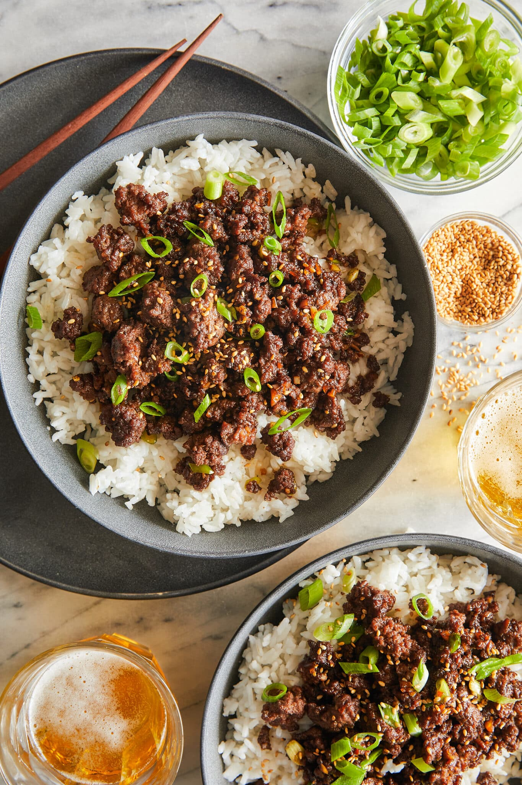

Ground Beef Bulgogi

Description
Korean bulgogi inspired recipe made easy for a quick weeknight meal. Pairs great with cucumbers, siracha, mayo.
Ingredients
- 1 lb Ground Beef
- 3-4 cloves minced Garlic
- 1 Tbsp Olive Oil
- 1/4 Cup Soy Sauce
- 1 Tbsp Minced Ginger
- 1/2 Tsp Red Pepper Flakes
- 1 Tbsp Seasame Oil
- 1/4 Cup Brown Sugar
- 2 cups uncooked Jasmine Rice
Steps
- Cook jasmine rice in rice cooker.
- Heat oil in skillet over medium high heat.
- Add garlic and stir for 30 seconds until fragrant.
- Add beef and break apart, cook until browned.
- Meanwhile mix all other ingredients in bowl.
- Once beef is cooked, add sauce. Cook and stir for 2-3 minutes.